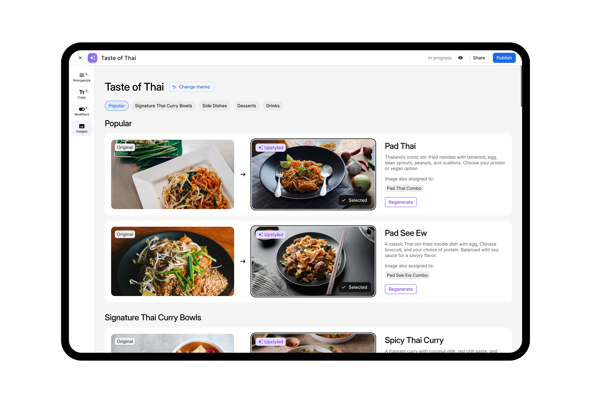
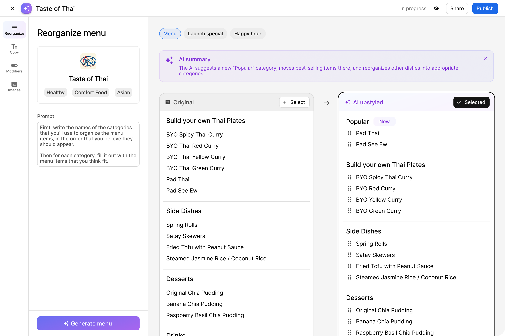
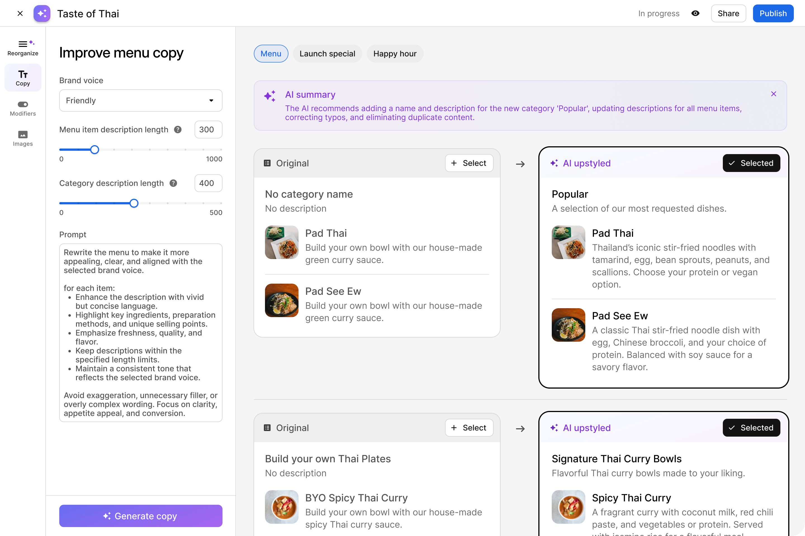
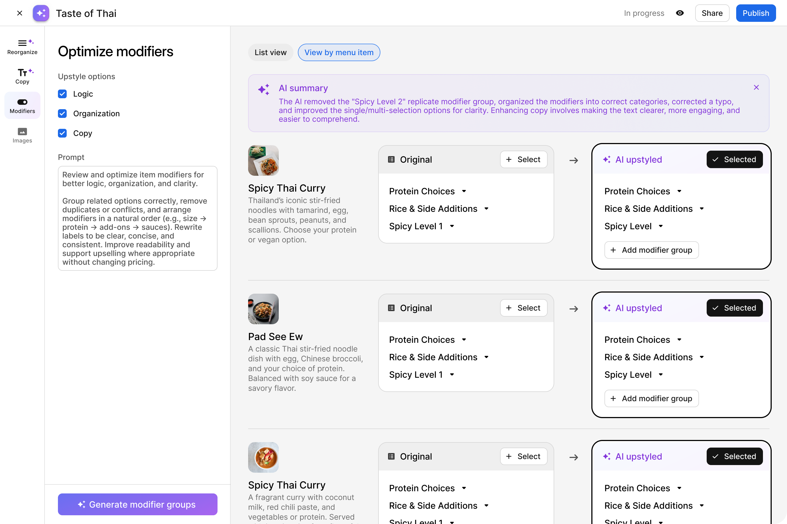
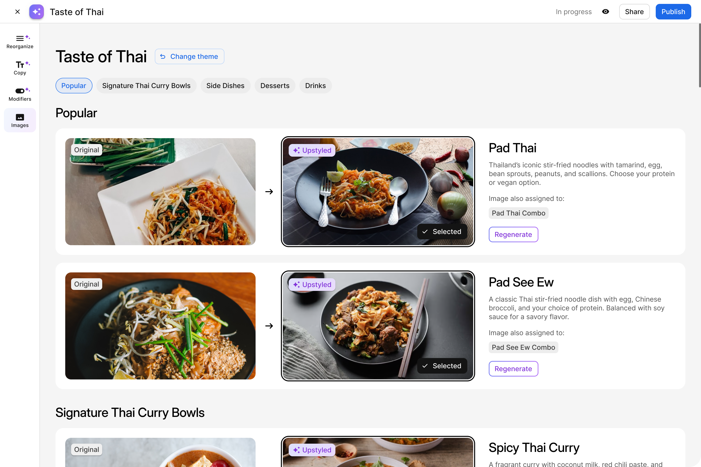
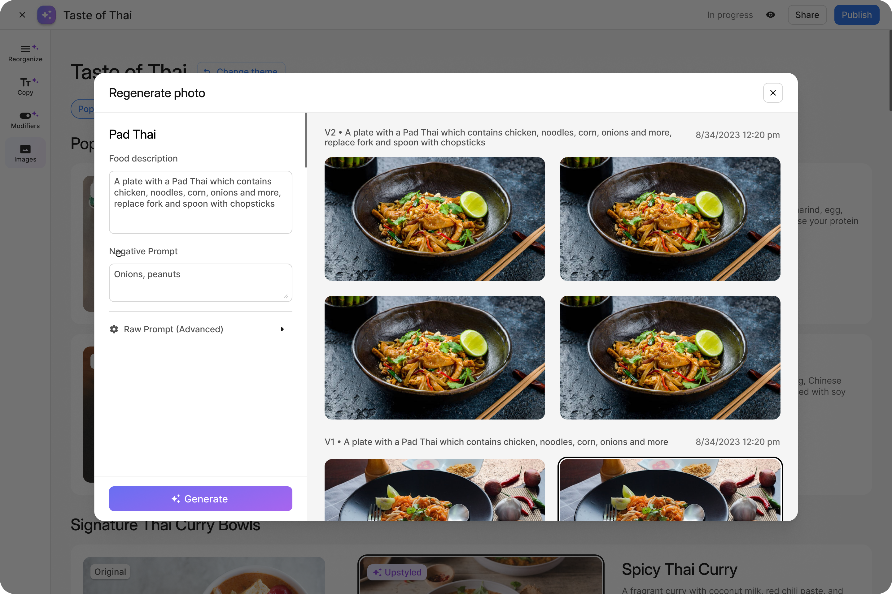
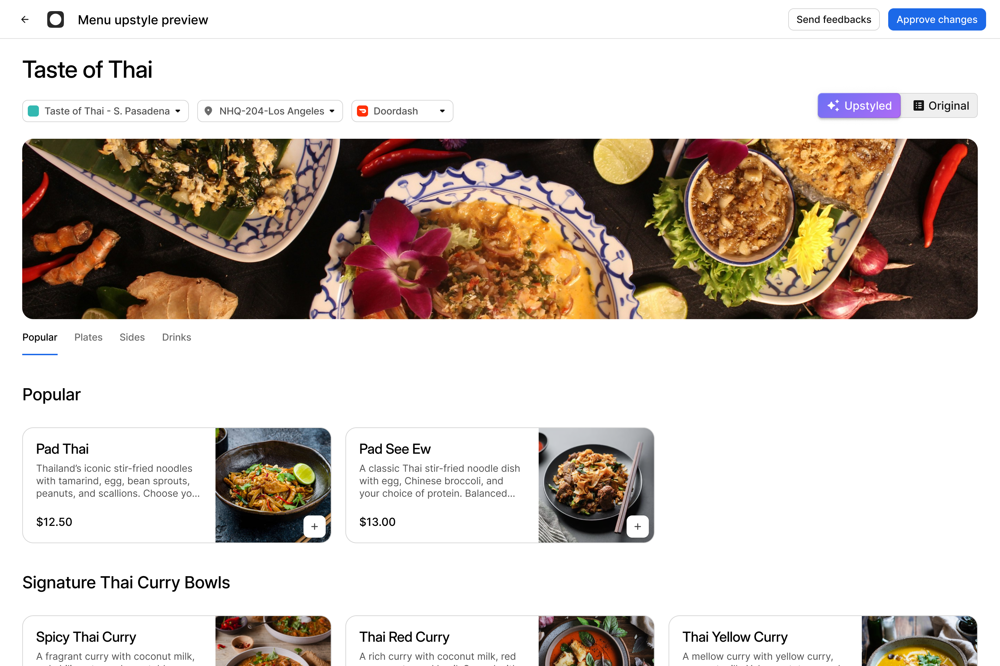
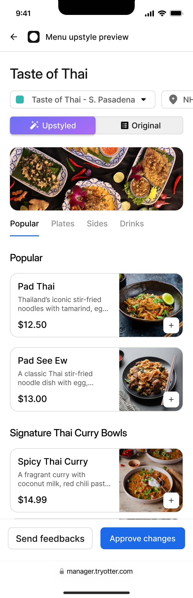

01
Operator gap
New restaurant operators needed hands-on guidance to improve menu structure and copy.
Case Study
Overview
01 / 08
Case study
Brand Builder is an internal AI-powered tool that helps Customer Success Managers scale menu optimization for restaurant operators without losing editorial control.

Problem
90% of inbound customers were new operators who knew food but not restaurant management, so the customer success team was manually upgrading menus for them.
01
New restaurant operators needed hands-on guidance to improve menu structure and copy.
02
The existing service model was driving roughly 30% average sales lift for supported menus.
03
As the customer base grew, the same manual process became too expensive and slow to sustain.
Discovery
After brainstorming with the Customer Success team, we identified a way to streamline and scale menu optimization by integrating AI-driven enhancements into the workflow.
CSMs tailored prompt inputs to reflect each restaurant’s voice, cuisine style, and signature elements.
Content specialists reviewed the AI output for accuracy, cultural authenticity, and consistency.
The interface needed to make AI feel editable, transparent, and safe for internal teams to trust.

Solution
I designed an AI-assisted workflow that let teams configure optimization inputs, generate editable recommendations, collaborate with operators, and publish the final menu on the operator’s behalf.
Step 1
Optimization begins with clear inputs instead of unstructured one-off requests.
Step 2
AI recommendations are reviewable and revisable, not treated as final output.
Step 3
Operators can compare versions, leave feedback, and approve polished updates.
Designing the optimization flow
Establish hierarchy and item positioning so all generated content is context-aware.
Descriptions are generated based on item role within each category, improving consistency and reducing rework.
Modifier logic is layered on top of the finalized structure to support customization and upsell clarity.


AI image workflow
Images were generated only after the AI content was finalized, improving visual relevance and consistency.
Teams could regenerate imagery with the same context, enabling quick iteration without resetting the workflow.
The experience was designed so AI output could be revised rather than treated as precious or locked.


Collaborative review
Review loop
Operators received side-by-side comparisons so they could review updates, give feedback, and request revisions before final approval.
Before-and-after presentation made AI changes easier to understand and trust.
The review experience translated between desktop workflows for teams and mobile-friendly output for operators.


Result
During testing, the AI upstyled image feature was piloted with 17 storefronts. Early results were promising: 85% of participating storefronts saw GMV growth, with an average increase of around 30%.